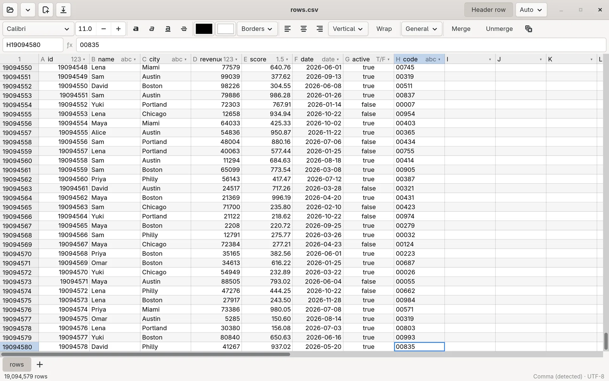
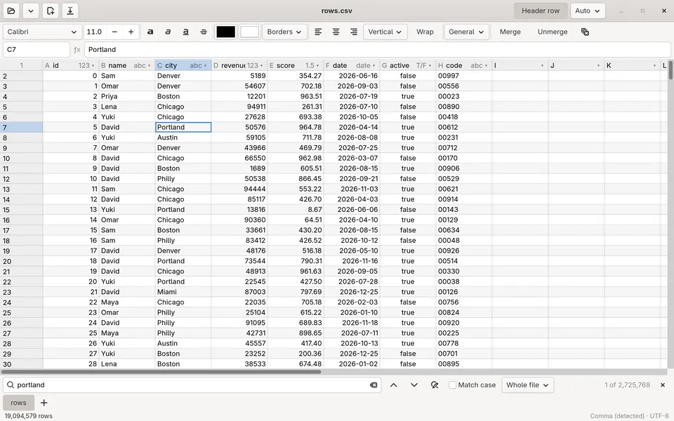
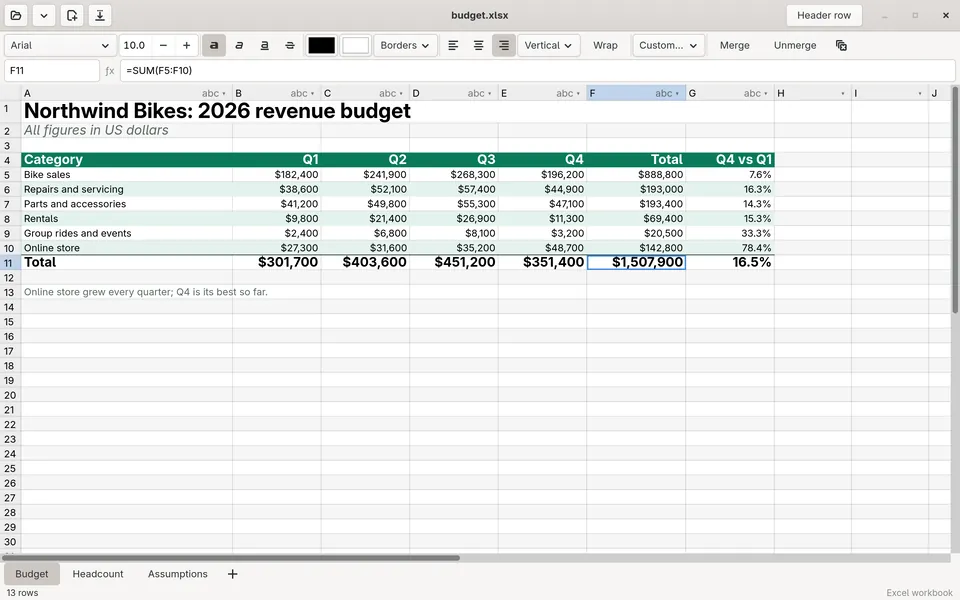
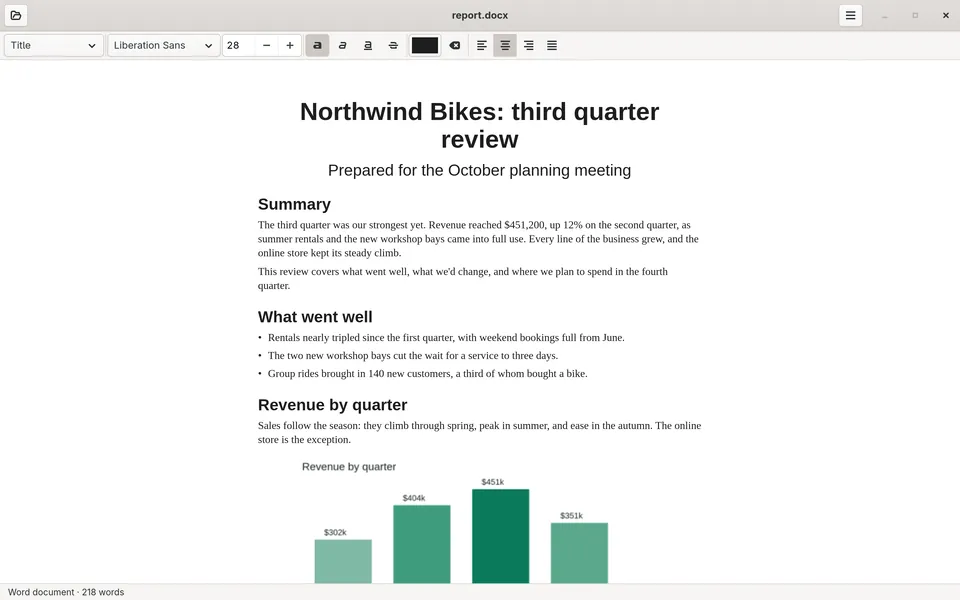
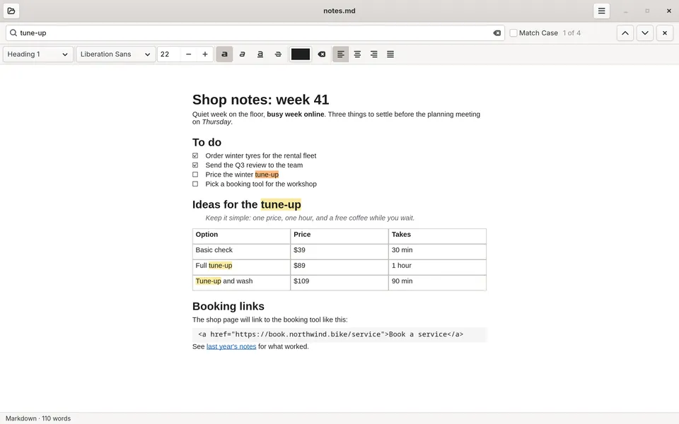
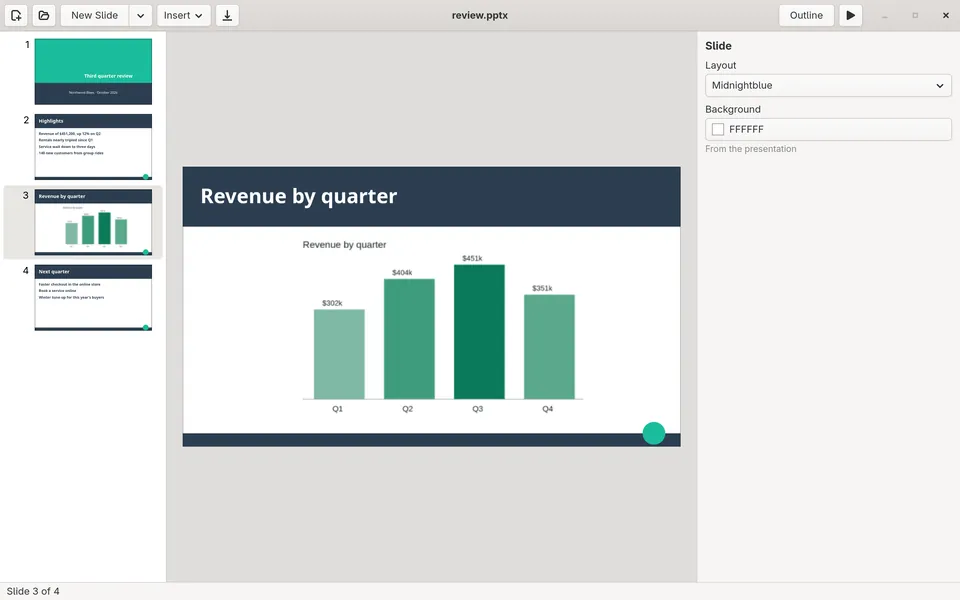
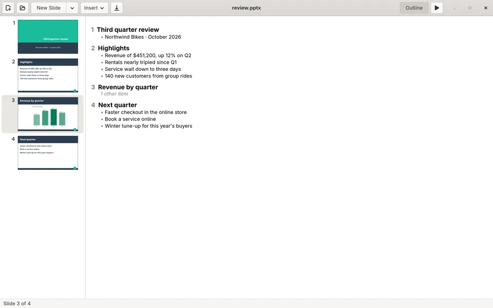

Brick
SpreadsheetOpens gigabyte CSV files in a blink and edits .xlsx workbooks with formulas, multiple sheets, and cell styles. Saves never corrupt your file, and 00123 stays 00123.
A fast, native office suite for Linux. No subscriptions, no browser tab, no waiting.
Spreadsheets · Documents · Presentations · Written in Rust
Each app installs and runs on its own. Install what you need.
Opens gigabyte CSV files in a blink and edits .xlsx workbooks with formulas, multiple sheets, and cell styles. Saves never corrupt your file, and 00123 stays 00123.
Opens, edits, and saves Word documents (.docx), Markdown, and plain text on one endless page. Saving a .docx changes only what you edited, so everything else in it stays as it was.
Opens, edits, plays, and saves PowerPoint decks (.pptx), directly on the slide or in an outline, with one inspector instead of a ribbon. Saving changes only what you edited.
Screenshots of the current releases on Linux. Click one to see it full size.







One command per app, for your user only. No sudo, no package manager. Paste it into a terminal; then start the app from your app menu.
curl -fsSL https://brick.cronkite.cc/install.sh | sh
The command is brick. CSV and TSV files open with it. Download page: brick.cronkite.cc.
curl -fsSL https://slate.cronkite.cc/install.sh | sh
The command is slate. Word documents (.docx) and Markdown (.md) open with it, and it offers to open plain text. Download page: slate.cronkite.cc.
curl -fsSL https://frame.cronkite.cc/install.sh | sh
The command is frame. PowerPoint presentations (.pptx) open with it. Download page: frame.cronkite.cc.
brick, slate, frame) in ~/.local/bin, and its menu entry and icon in ~/.local/share.An x86_64 Linux system with GTK 4.14 or newer. GNOME desktops already have it. Tested on Arch, Ubuntu 24.04, and Fedora, and newer releases of each. If GTK 4 is missing, the installer tells you how to get it:
| Distribution | Install GTK 4 |
|---|---|
| Arch, Manjaro, EndeavourOS | sudo pacman -S gtk4 |
| Ubuntu 24.04+, Debian 13+ | sudo apt install libgtk-4-1 |
| Fedora | sudo dnf install gtk4 |
| openSUSE | sudo zypper install libgtk-4-1 |
Run the app's install command again. It replaces the old version and keeps your settings and recent files.
curl -fsSL https://brick.cronkite.cc/install.sh | sh -s -- --uninstall
curl -fsSL https://slate.cronkite.cc/install.sh | sh -s -- --uninstall
curl -fsSL https://frame.cronkite.cc/install.sh | sh -s -- --uninstall
Removes the app, its menu entry, and its file defaults. Your files are untouched.
Each app's download page has its latest release as a .tar.gz, with its version, size, and sha256: Brick, Slate, Frame.
Cronkite is open source (MIT or Apache-2.0) and built in the open: github.com/avdrav1/cronkite.